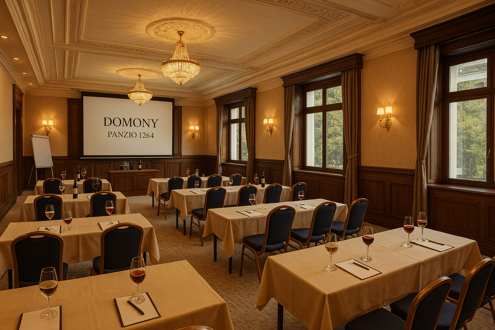
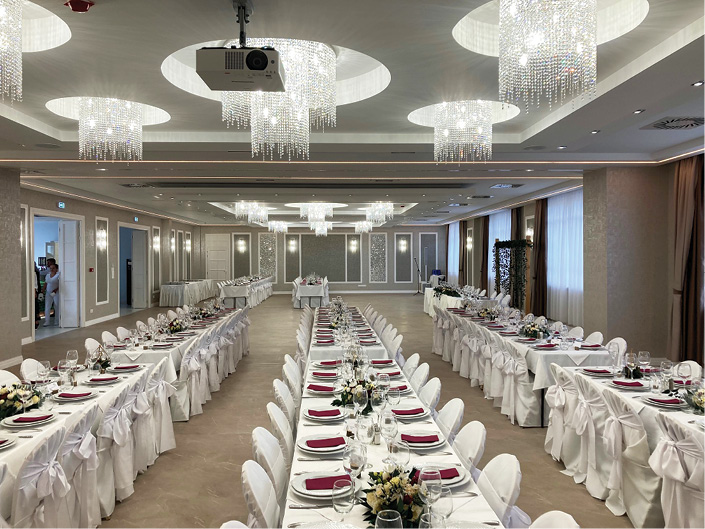

Konferencia terem
A Domony Panzió 1284 konferenciaterme egy elegáns, professzionális tér üzleti események, tárgyalások és rendezvények lebonyolítására.
Főbb jellemzők:
Tágas, világos tér: Modern kialakítás, nagy ablakokkal, természetes fény beengedésére.
Prémium berendezés: Elegáns fa- és márványdíszítés, kényelmes ülőhelyek.
Fejlett technológia: Nagyméretű vetítővászon, projektor, professzionális hangrendszer, gyors Wi-Fi.
Rugalmas elrendezés: Konferenciák, workshopok, üzleti ebédek és előadások számára is alkalmas.
Kiváló kiszolgálás: Frissítők, kávészünetek, és teljes körű catering opciók.
A terem kifinomult, nyugodt atmoszférát kínál, amely tökéletes a sikeres megbeszélésekhez és rendezvényekhez.
Céges Rendezvényhelyszínek
Konferencia- és Rendezvényközpontok – Nagy befogadóképesség, modern technikai felszereltség, VIP tárgyalók.
Luxus Szállodák és Kastélyok – Elegáns környezet, teljes körű szolgáltatások, prémium catering.
Loftok és Industriális Helyszínek – Trendi, letisztult terek, kreatív rendezvényekhez.
Vidéki Panziók és Borászatok – Természetközeli hangulat, exkluzív bor- és gasztronómiai élmény.
Esküvői Rendezvényhelyszínek
Kastélyok és Luxus Szállodák – Romantikus, elegáns esküvői helyszínek prémium kiszolgálással.
Borkastélyok és Vidéki Panziók – Hangulatos, természetközeli esküvők panorámás kilátással.
Tengerparti és Yacht Klubok – Exkluzív, vízparti ceremóniák és luxus esküvők.
Rugalmas elrendezés: Konferenciák, workshopok, üzleti ebédek és előadások számára is alkalmas.
Kiváló kiszolgálás: Frissítők, kávészünetek, és teljes körű catering opciók.

